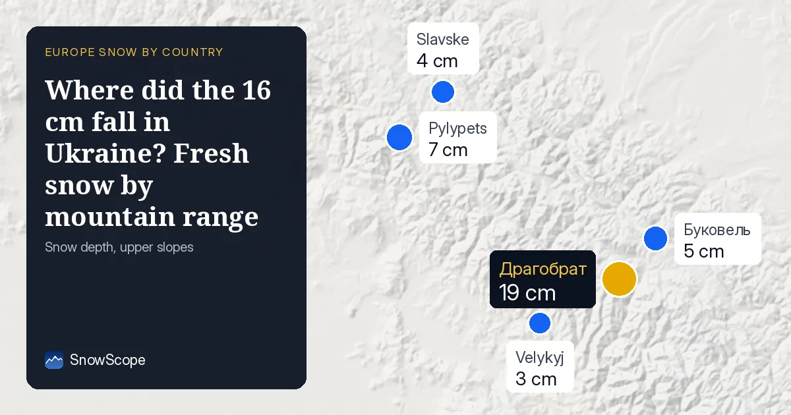

Where did the 16 cm fall in Ukraine? Fresh snow by mountain range
In the past three days, the Ukrainian mountains received between 14 and 24 cm of fresh snow across different ranges. The heaviest falls landed in the high peaks of Chornohora, while lower ranges saw less accumulation.
See the live snow forecast for Драгобрат in the SnowScope appSnow depth, powder alerts and the 3D map, free.
Three ranges, three depths of snow
When I look at the snowfall pattern across Ukraine's mountains over the past 72 hours, I see a clear story written by elevation and location. The highest, coldest part of the system—Chornohora—captured 24 cm of new snow. That is the wettest range we are tracking right now. Moving west, the Gorgany received 19 cm, still substantial. Further down the system, the Borzhava ridge accumulated 14 cm. The difference between these ranges tells us how the weather system moved and where the coldest air stayed longest.
This kind of range-by-range variation is typical in mountain snow studies. The highest peaks trap more moisture and stay colder, so they hold more snow. The pattern also shows that the storms have been tracking along the mountain axis, with Chornohora in the east pulling the most precipitation.
| Resort | Snow depth | New snow, 72 h | Coming, next days | Top |
|---|---|---|---|---|
| Драгобрат | 19 cm | 22 cm | 11 cm | 1,706 m |
| Pylypets | 7 cm | 9 cm | 4 cm | 1,165 m |
| Буковель | 5 cm | 9 cm | 8 cm | 1,370 m |
| Slavske | 4 cm | 6 cm | 6 cm | 1,213 m |
| Velykyj | 3 cm | 4 cm | 8 cm | 593 m |

What fell in the last 24 hours
Yesterday to today, 4 cm of new snow fell as a maximum across the region, but tomorrow looks busier. About 4150 square km received 5 cm or more of fresh snow in the 72-hour window. Tomorrow, 2026-11-23, is shaping up to be the snowiest day of the week ahead, with 7 cm forecast as the maximum. The snow line sits at 700 m today, meaning lower ground is wet or bare while the high peaks are receiving good accumulation.

Драгобрат leads the resorts
Among the ski areas, Драгобрат (1706 m) stands out with 19 cm on the ground now, built up from 22 cm in 72 hours. That depth is thin for ski touring, but it is the best in Ukraine right now. The next-best resorts are much lower: Pylypets has 7 cm (9 cm added) and Буковель has 5 cm (9 cm added). Most other resorts are still in single digits. The elevation difference matters here—Драгобрат sits 500 m higher than Pylypets, so it stays colder and catches more snow.
In the 1500 to 2000 m band, SnowScope shows a mean depth of 14 cm with complete snow cover. That is where the ski touring potential lies. Below 1500 m, coverage is patchy and depths are low.
Snow cover jumped in one week
The area covered by snow grew from 6120 square km seven days ago to 11820 square km today. That is an increase of 5700 square km in one week. Yesterday alone added 2700 square km of snow-covered ground. Right now, 67 percent of the region is white. This rapid growth reflects a shift from dry conditions to an active storm pattern.
What comes next
The 72-hour and 7-day outlooks show more snow is on the way. The maximum in the next three days is forecast at 11 cm, and the next seven days could bring 17 cm. Драгобрат will likely see the most, with 11 cm expected in the next three days. The snowiest day is tomorrow, 2026-11-23. After that, the pace will slow but accumulation will continue. For anyone planning upslope touring or rope access, the window between 2026-11-23 and 2026-11-25 is when the mountains will offer the most recent snow.
Reading the high-ground signal
One key detail from field work in dry mountain ranges: when fresh snow falls unevenly across ranges like this, it tells us about wind direction and the shape of the storm. The Chornohora receiving the most snow suggests the storm system has been feeding moisture from a particular direction into the highest peaks. This is good news for high-elevation touring but means lower resorts will stay snow-starved for a while longer.
If you are planning off-piste activity, check the official avalanche bulletin for the region. Early-season snow on thin ground can be unstable.
Tips for skiers
- Драгобрат and high peaks above 1500 m hold the most usable snow (14 cm mean depth with full cover). Lower resorts below 1000 m are still marginal.
- Tomorrow, 2026-11-23, is the day to watch for fresh powder at higher elevations; expect up to 7 cm of new snow.
- Snow cover jumped 5700 square km in one week, but most of that is thin (1 cm at 500–1000 m band). Real skiing depth is above 1500 m.
- The next three days will add another 11 cm to the high peaks. Wait for accumulation to thicken before committing to low-ground touring.
- Check the official avalanche forecast before going off-piste; early-season snow on thin base can slide.
About these numbers
Resort snow depths are the deepest snow on the resort's upper slopes on the date shown; they are estimates for an area, not a measurement at one point. Forecasts can change. Always read the official avalanche bulletin before going off-piste.
Cite this report
For research, teaching or the press: the numbers and charts are free to reuse under CC BY 4.0 with this citation.
SnowScope (2026), Where did the 16 cm fall in Ukraine? Fresh snow by mountain range, https://snowscope.app/blog/en/2026/11/ukraine-where-the-snow-fell-22-november-2026.html, accessed 2026-11-22
SnowScope (Atlas Labs). (2026, November 22). Where did the 16 cm fall in Ukraine? Fresh snow by mountain range. SnowScope snow reports. https://snowscope.app/blog/en/2026/11/ukraine-where-the-snow-fell-22-november-2026.html
BibTeX
@misc{snowscope2026ukrainewherethesnowfell2,
author = {{SnowScope (Atlas Labs)}},
title = {Where did the 16 cm fall in Ukraine? Fresh snow by mountain range},
year = {2026},
month = nov,
howpublished = {\url{https://snowscope.app/blog/en/2026/11/ukraine-where-the-snow-fell-22-november-2026.html}},
note = {Published 2026-11-22 12:32 UTC; accessed 2026-11-22}
}· CC BY 4.0 · Methods, data and tools →
Драгобрат: snow and temperature by height, this winter vs last (tools) →
Follow Драгобрат
Free: a message when fresh snow is coming, and the forecast every morning.
More snow reports

Up to 30 cm of snow fell on northern Velebit and Bjelolasica on Friday 13 November 2026. By Tuesday it was gone. Day by day, what the mountains kept, and when snow comes back.

Only Borovets and Bansko have a trace of snow at the top today, 2 cm each. A week ago Borovets had 11 cm. Day by day, and the one snowy day in the forecast.

From 13 to 19 November 2026 Slovenia got the most snow and kept it; Serbia and Croatia had a deep but short white weekend; Montenegro only on Durmitor; Bulgaria almost none. The ranking, with links to each country report.